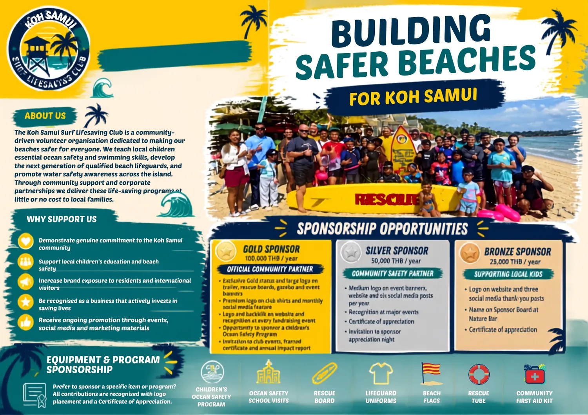
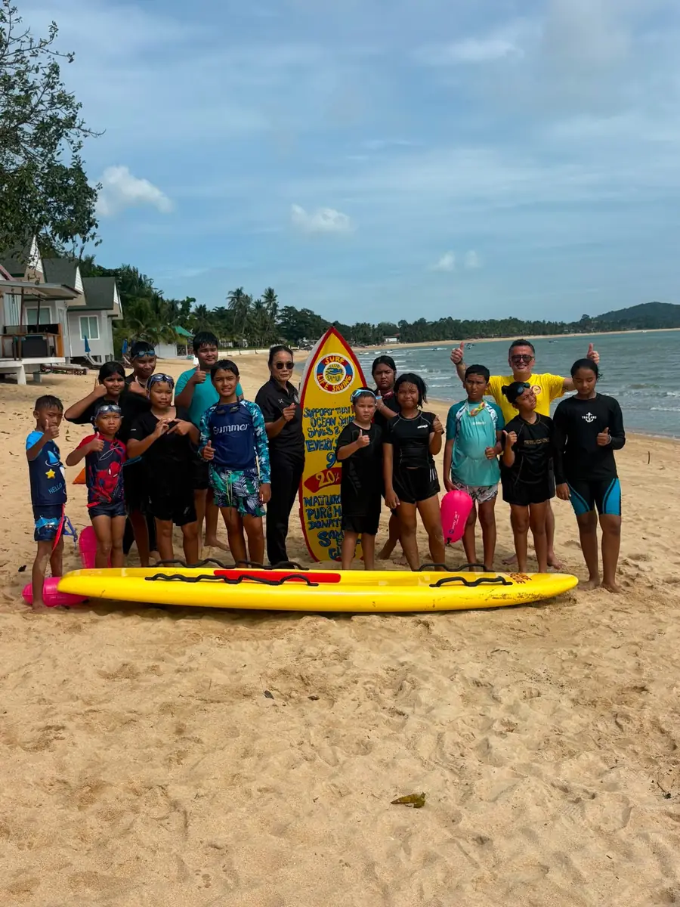

Minairal Fundraiser
Drink Minairal. Help local kids swim and stay safe.
Every bottle sold through the fundraiser supports children's swimming and ocean-safety skills.
Sponsors
Sponsorship opportunities, sponsor stories and confirmed sponsor logos.
Sponsorship opportunities
Local sponsors help provide rescue equipment, beach flags, first aid supplies, uniforms, school visits and children's ocean-safety programs.

Minairal Fundraiser
Every bottle sold through the fundraiser supports children's swimming and ocean-safety skills.

Lick Koh Samui
Lick Koh Samui is featured as a local supporter of the club's beach program and community safety work.
Our Sponsors